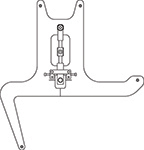
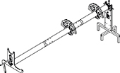
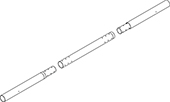
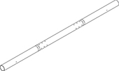
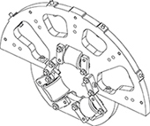
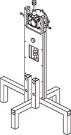

- 00000018WIA30FC8030GYZ
- id_123742061.18
- Dec 12, 2024, 4:24:34 PM
PET/MR insert installation tool setup
Prerequisites
| Required persons | Preliminary requirements | Procedure | Finalization |
|---|---|---|---|
| 2 | - | 30 minutes | - |
| Item | Quantity | Effectivity | Part number | Manufacturer |
|---|---|---|---|---|
| Magnet interface plate (attaches to magnet)  | 1 | - | - | - |
| Jack screw handle | 1 | - | - | - |
| PET/MR insert installation tool (assembled)  | 1 | - |
5438864 | - |
| Cart for installation tool | 1 | - |
5482083 | - |
| Nonmagnetic service tool kit | 1 | - |
5112581 | - |
| Guide tube (unconnected)  | - | - | - | - |
| Guide tube (connected)  | 1 | - | - | - |
| Guide tube, service-end section | 1 | - | - | - |
| Guide tube, patient-end section | 1 | - | - | - |
| Guide tube, central section | 1 | - | - | - |
| 1 of 2 interface plates (insert supports)  | 2 | - | - | - |
| Base weldment (tripod)  | 1 | - | - | - |
| ||||||||
| Condition | Reference | Effectivity |
|---|---|---|
|
Remove the patient table. Store it where it will not interfere with this procedure. | - | - |
| - | - | |
| - | - | |
| - | - | |
| - | - | |
|
Confirm that the front and middle bridges have been removed. | - | - |
About this task
Overview
This procedure describes how to set up the PET/MR insert installation tool, which is used to position the PET/MR insert within the magnet, and remove the insert for service.
Servicing the PET/MR insert
About this task
This section is only performed when servicing the PET/MR insert. If setting up the installation tool to position the PET/MR insert within the magnet bore, proceed to Installing the interface plates.
Procedure
LOTO the PDUs in the PGR and PET cabinets. See Applying LOTO - PGR Power Distribution Unit (PDU)/Gradient Subsystem.Notice - Turn off the PET chiller.
Installing the interface plates
About this task
Even though the interface plates are reversible, install them as shown below. The bolts are easier to access when located on the outside of the PET/MR insert.
Procedure
Assembling the guide tube
About this task
The guide tube consists of three sections that need to be assembled prior to use.
Procedure
Operating the installation tool
Procedure
- Use the jack screw handle (1) to rotate the screw jack (2) on
the magnet interface at the service end, clockwise to raise the tool
and counterclockwise to lower it.
Figure 10. Adjusting tool height (service end) 
- Use the jack screw handle (1) to rotate the screw jack (2) on
the tripod at the patient end of the magnet, clockwise to raise the
tool and counterclockwise to lower it. Use the M10 socket-head cap
screw (3) for left/right adjustment.
Figure 11. Adjusting tripod height (patient end) 
- Tighten each holding bolt (1) to secure the Insert on the guide
tube once the Insert is positioned in the desired location.Note
Do not tighten the holding bolts until the Insert is completely removed from the bore. The holding bolts enable rotation of the Insert on the guide tube, but do not allow horizontal movement along the guide tube.
Figure 12. Tightening holding bolts 
Finalization
Procedure
- Remove the leak sensor (2) from the service end of the insert:
- Remove the screw.
- Pull the leak sensor out slightly, then slide and rotate it to the left to clear the fiber-optic breakout boxes.
- Pull the leak sensor out completely.
Figure 15. Fiber-optic patch cables and leak sensor 
- Loosen the six screws (1) that secure the DMOD covers (2) and
slide them off.
Figure 16. DMOD screws and covers